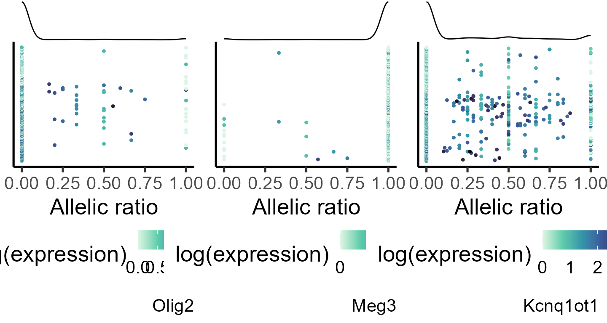
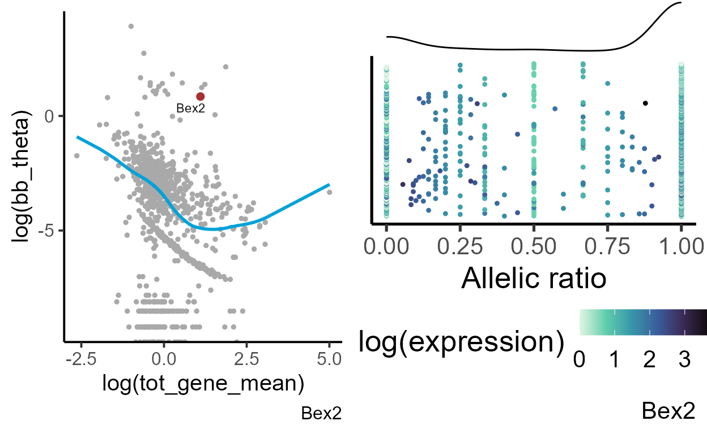
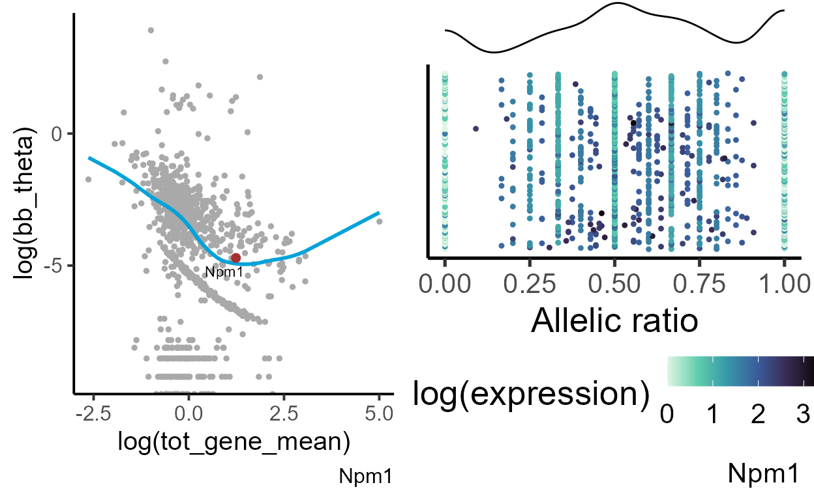

allelic_variance
allelic_variance.RmdAllelic variance test
Introduction
Evaluating allele-specific expression (ASE) at the single-cell level can reveal genes undergoing transient activation states. In scRNA data, such gradual activation often appears as increased variation in the allelic ratio distribution. To detect genes whose allelic variation differs from the expected levels for genes with similar expression, ASPEN applies the allelic variance test. In this test:We will use the same Bl6Cast dataset to demonstrate ASPEN-var test.
The initial processing steps are the same as described in the “Allelic
imbalance test” vignette. If you already have the output from
[estim_bbparams()] function, you can skip directly to the .
Loading allele-specifc count data
data("Bl6_Cast_a1")
data("Bl6_Cast_tot")
load_file <- system.file("extdata", "Bl6_Cast_cell_annot.xlsx", package = "ASPEN")
cell_annot <- read.xlsx(load_file, rowNames = T)
#adding barcode id
cell_annot$cell_id <- paste(cell_annot$clone, cell_annot$cell_barcode, sep = "_")
print_md(as_huxtable(head(cell_annot)))
#> -----------------------------------------------------------------------
#> cell_barcode background cell_type cell_idents clone cell_id
#> ------------- ---------- ------------ ------------ ------ -------------
#> AAACCCACAGCA cast_b6 Gliogenic Gliogenic clone3 clone3_AAACC
#> GATG progenitor RGCs CACAGCAGATG
#> cells
#>
#> AAACCCATCAGA cast_b6 Gliogenic Gliogenic clone3 clone3_AAACC
#> GCGA progenitor RGCs CATCAGAGCGA
#> cells
#>
#> AAACGAAGTAGT cast_b6 Neurogenic RGCs clone3 clone3_AAACG
#> TAGA progenitor AAGTAGTTAGA
#> cells
#>
#> AAACGAAGTGTT cast_b6 Intermediate IPCs clone3 clone3_AAACG
#> ATCG neuronal AAGTGTTATCG
#> progenitors
#>
#> AAACGAATCTCG cast_b6 Deep layer Cortical clone3 clone3_AAACG
#> TCAC neurons neurons AATCTCGTCAC
#>
#> AAAGGATGTATG cast_b6 Intermediate IPCs clone3 clone3_AAAGG
#> CTTG neuronal ATGTATGCTTG
#> progenitors
#> -----------------------------------------------------------------------Data pre-processing
We load the reference allele and total counts and create a
SingleCellExperiment object.
#keeping annotated cells in the count matrices
Cast_B6_a1 <- Cast_B6_a1[,gsub(".*_", "", colnames(Cast_B6_a1)) %in% cell_annot$cell_barcode]
Cast_B6_tot <- Cast_B6_tot[,gsub(".*_", "", colnames(Cast_B6_tot)) %in% cell_annot$cell_barcode]
#creating SingleCellExperiment object
ase_sce <- SingleCellExperiment(assays = list(a1 = as.matrix(Cast_B6_a1),
tot = as.matrix(Cast_B6_tot)))Lowly expressed genes (expressed in less than 10 cells) are removed.
#removing lowly expressed genes
ase_sce <- ase_sce[rowSums(assays(ase_sce)[['tot']] > 1) >= 10, ]
print_md(as_huxtable(dim(ase_sce)))
#> ----------------------
#> V1
#>
#> 1551
#>
#> 6312
#> ----------------------Splitting count matrices by cell type
The test is run separately for each cell type. First, we split the metadata object by cell types.
#splitting the metadata by cell type
cell_list <- split(cell_annot, f = cell_annot$cell_idents)Since beta-binomial parameters are estimated from raw counts, we first split the raw total and reference allele count matrices by cell type.
#splitting SingleCellExperiemnt object by cell types
ase_sce_byct <- list()
for (i in 1:length(cell_list)){
ase_sce_byct[[i]] <- ase_sce[,colnames(ase_sce) %in% cell_list[[i]]$cell_id]
}
#removing genes with low expression
ase_sce_byct_filt <- lapply(ase_sce_byct, function(q)
q[rowSums(assays(q)[['tot']] > 1) >= 10, ])
#extracting raw total counts
tot_mat <- lapply(ase_sce_byct_filt, function(q) as.matrix(assays(q)[['tot']]))
#extracting raw reference allele counts
a1_mat <- lapply(ase_sce_byct_filt, function(q) as.matrix(assays(q)[['a1']]))
#selecting genes that matched filtering criteria
a1_mat <- mapply(function(p,q) p[rownames(q), ], a1_mat, tot_mat, SIMPLIFY = F)Estimating beta-binomial parameters
bb_init_params <- mapply(function(p, q) estim_bbparams(p, q, min_cells = 5, cores = 6), a1_mat, tot_mat, SIMPLIFY = F)Defining lowly expressed genes
min_cutoff <- lapply(bb_init_params, calc_mad)
min_cutoff
#> [[1]]
#> [1] 0.002254469
#>
#> [[2]]
#> [1] 0.001084665
#>
#> [[3]]
#> [1] 0.002810162
#>
#> [[4]]
#> [1] 0.00113423
#>
#> [[5]]
#> [1] 0.001276519Estimate appropriate shrinkage parameters
set.seed(1001011)
shrink_pars <- mapply(function(p, q) estim_delta(p, thetaFilter = q),
bb_init_params, min_cutoff, SIMPLIFY = F)
shrink_pars
#> [[1]]
#> N delta
#> 17 18
#>
#> [[2]]
#> N delta
#> 13 15
#>
#> [[3]]
#> N delta
#> 17 17
#>
#> [[4]]
#> N delta
#> 14 17
#>
#> [[5]]
#> N delta
#> 20 19Performing Bayesian shrinkage
As explained in the “Allelic imbalance test” vignette, low-dispersion
genes are excluded from local regression trend modelling. However, these
genes are still evaluated for their depature from the expected levels of
allelic variation. To calculate stabilized dispersion for this gene
category, shrinkAll parameter in the
[correct_theta()] function is set to TRUE (the
default option is FALSE - which is how it is used for the
[bb_mean()] test).
bb_init_params <- lapply(bb_init_params, function(q) q[!is.na(q$bb_theta),])
shrunk_estims <- mapply(function(p, q) correct_theta(p, N_set = q[1], delta_set = q[2], thetaFilter = 0.001, shrinkAll = TRUE),
bb_init_params, shrink_pars, SIMPLIFY = F)
print_md(as_huxtable(head(shrunk_estims[[1]])))
#> Warning in to_md.huxtable(ht, ...): Couldn't print whole table in max_width = 80 characters.
#> Printing 8/13 columns.
#> ---------------------------------------------------------------------
#> N AR tot_gene tot_gene alpha beta bb_mu bb_theta
#> _mean _varianc
#> e
#> --------- ------ -------- -------- -------- -------- ------ --------
#> 850 0.984 5.94 29.3 175 2.41 0.986 0.0056
#>
#> 1.06e+03 0.999 8.21 45.4 4.41e+03 3.42 0.999 0.0002
#>
#> 37 0.976 1.09 1.78 14.6 0.343 0.977 0.067
#>
#> 25 0.0113 0.953 1.54 0.807 64.2 0.0124 0.0154
#>
#> 1.43e+03 0.695 21.3 322 184 84.5 0.685 0.0037
#>
#> 93 0.0039 1.4 3.57 25.2 6.94e+03 0.0036 0.0001
#> ---------------------------------------------------------------------Test for the depature from the expected levels of allelic variation
Unlike the test for alelic imbalance, [bb_var()] is
performed on the raw counts as normalization can distort the variation
between the counts. As with [bb_mean()], we apply filtering
threshold requiring each gene to be expressed in at least five cells
with a minimum of 5 reads. Significance is assessed using a permutation
test. By default, the number of permutations is set to 500, but this can
be adjusted with n_pmt and n_sim
parameters.
bb_var_res <- mapply(function(p, q, r) bb_var(p, q, estimates = r,
min_cells = 5, min_counts = 5,
n_pmt = 500, n_sim = 500),
a1_mat, tot_mat, shrunk_estims, SIMPLIFY = F)For genes that do not meet the quality cut-off threshold (here: a
minimum of 5 cells with at least 5 mapped reads per cell), the variance
test is not performed. These genes will have NA values in
the output columns. We remove such genes before calculating the false
discovery rate (FDR).
bb_var_res <- lapply(bb_var_res, function(q) q <- q[!is.na(q$pval_disp),])
#calculating fdr
bb_var_res <- lapply(bb_var_res, function(q)
{q$fdr_disp <- p.adjust(q$pval_disp, method = "fdr");
q <- q[order(q$fdr_disp),];
return(q)})bb_var()] function is a table that combines
the output of the [estim_bbparams()] and
[correct_theta()] functions and adds the following
columns:\
\
Defining genes with monoallelic expression
Beta-binomial parameters can also be used to identify genes with monoallelic expression and random monoallelic expression (RME). Genes are classified as monoallelically expressed if their parameter estimates meet either of the following criteria: or .
bb_var_res <- lapply(bb_var_res, function(q) {q$monoal <- ifelse(q$alpha < 1 | q$beta < 1, 1, 0);
return(q)}) The number of genes classified as monoallelically expressed per cell type:
lapply(bb_var_res, function(q) table(q$monoal))
#> [[1]]
#>
#> 0 1
#> 933 41
#>
#> [[2]]
#>
#> 0 1
#> 751 38
#>
#> [[3]]
#>
#> 0 1
#> 820 35
#>
#> [[4]]
#>
#> 0 1
#> 1233 45
#>
#> [[5]]
#>
#> 0 1
#> 999 41
lapply(bb_var_res, function(q) q[q$monoal == 1, c("AR", "fdr_disp")][1:10,])
#> [[1]]
#> AR fdr_disp
#> Meg3 0.9722762 0
#> Kcnq1ot1 0.1969765 0
#> Rian 0.9651826 0
#> Snrpn 0.2622304 0
#> Bex2 0.7055834 0
#> 9330162G02Rik 0.3506396 0
#> Gpm6b 0.7670272 0
#> Pgrmc1 0.7442399 0
#> Ndufb11 0.7112723 0
#> Pcsk1n 0.6716533 0
#>
#> [[2]]
#> AR fdr_disp
#> Meg3 0.9792260 0
#> Kcnq1ot1 0.1870162 0
#> Bex2 0.6371548 0
#> Gpm6b 0.5593086 0
#> Ndufb11 0.5618963 0
#> Pcsk1n 0.6507759 0
#> Tspan7 0.5777158 0
#> Sh3bgrl 0.6225959 0
#> Maged1 0.6058882 0
#> Mt3 0.6400374 0
#>
#> [[3]]
#> AR fdr_disp
#> Meg3 0.9669701 0
#> Tuba1b 0.9287204 0
#> Kcnq1ot1 0.2204702 0
#> Bex2 0.7045911 0
#> Gpm6b 0.7531993 0
#> Ndufb11 0.7084227 0
#> Pcsk1n 0.7234285 0
#> Tspan7 0.7403820 0
#> Dcx 0.7080914 0
#> Uba1 0.7219881 0
#>
#> [[4]]
#> AR fdr_disp
#> Hmgb1 0.9478554 0
#> Meg3 0.9668510 0
#> Kcnq1ot1 0.1750146 0
#> Bex2 0.6366406 0
#> Gpm6b 0.6032395 0
#> Ndufb11 0.5979667 0
#> Pcsk1n 0.6910833 0
#> Peg3 0.3223987 0
#> Tspan7 0.6856153 0
#> Uba1 0.6154512 0
#>
#> [[5]]
#> AR fdr_disp
#> Meg3 0.9707027 0
#> Kcnq1ot1 0.1671930 0
#> Bex2 0.6559426 0
#> Gpm6b 0.6250239 0
#> Ndufb11 0.6090887 0
#> Pcsk1n 0.6901007 0
#> Peg3 0.3161015 0
#> Tspan7 0.6268899 0
#> Dcx 0.8404762 0
#> Uba1 0.6338756 0Visualizing allelic ratio distribution for selected genes
#specifiying genes for plotting
genes_select <- list("Olig2", "Meg3", "Kcnq1ot1")
#generating data frame for plotting
plot_data <- lapply(genes_select, function(q) makedf(a1_mat[[4]], tot_mat[[4]], gene = q))
p_ar_dist <- mapply(function(p,q,r) plot_distr(p, gene = q),
plot_data, genes_select, SIMPLIFY = F)
do.call(grid.arrange, c(p_ar_dist, ncol = 3))
Defining genes with RME
We define genes with RME as those with and and approximately equal (the absolute difference between and is set to be less than 0.5).
bb_var_res <- lapply(bb_var_res, function(q) {q$abdiff <- abs(q$alpha - q$beta);
return(q)})
bb_var_res <- lapply(bb_var_res, function(q) {q$rme <- ifelse(q$alpha < 1 &
q$beta < 1 &
q$abdiff < 0.5, 1, 0);
return(q)}) The number of RME genes
lapply(bb_var_res, function(q) table(q$rme))
#> [[1]]
#>
#> 0 1
#> 950 24
#>
#> [[2]]
#>
#> 0 1
#> 767 22
#>
#> [[3]]
#>
#> 0 1
#> 830 25
#>
#> [[4]]
#>
#> 0 1
#> 1248 30
#>
#> [[5]]
#>
#> 0 1
#> 1015 25Top 10 RME genes
lapply(bb_var_res, function(q) q[q$rme == 1, c("AR", "fdr_disp")][1:10,])
#> [[1]]
#> AR fdr_disp
#> Bex2 0.7055834 0
#> Gpm6b 0.7670272 0
#> Pgrmc1 0.7442399 0
#> Ndufb11 0.7112723 0
#> Pcsk1n 0.6716533 0
#> Tspan7 0.7179053 0
#> Dcx 0.6763636 0
#> Uba1 0.6967240 0
#> Sh3bgrl 0.6997536 0
#> Maged1 0.6769483 0
#>
#> [[2]]
#> AR fdr_disp
#> Bex2 0.6371548 0
#> Gpm6b 0.5593086 0
#> Ndufb11 0.5618963 0
#> Pcsk1n 0.6507759 0
#> Tspan7 0.5777158 0
#> Sh3bgrl 0.6225959 0
#> Maged1 0.6058882 0
#> Mt3 0.6400374 0
#> Atrx 0.5412517 0
#> Nsdhl 0.5239680 0
#>
#> [[3]]
#> AR fdr_disp
#> Bex2 0.7045911 0
#> Gpm6b 0.7531993 0
#> Ndufb11 0.7084227 0
#> Pcsk1n 0.7234285 0
#> Tspan7 0.7403820 0
#> Dcx 0.7080914 0
#> Uba1 0.7219881 0
#> Sh3bgrl 0.7040431 0
#> Maged1 0.6903720 0
#> Mt3 0.4570011 0
#>
#> [[4]]
#> AR fdr_disp
#> Bex2 0.6366406 0
#> Gpm6b 0.6032395 0
#> Ndufb11 0.5979667 0
#> Pcsk1n 0.6910833 0
#> Tspan7 0.6856153 0
#> Uba1 0.6154512 0
#> Sh3bgrl 0.6500207 0
#> Maged1 0.6095045 0
#> Mt3 0.4722671 0
#> Zrsr2 0.5845943 0
#>
#> [[5]]
#> AR fdr_disp
#> Bex2 0.6559426 0
#> Gpm6b 0.6250239 0
#> Ndufb11 0.6090887 0
#> Pcsk1n 0.6901007 0
#> Tspan7 0.6268899 0
#> Uba1 0.6338756 0
#> Sh3bgrl 0.6493541 0
#> Maged1 0.6356134 0
#> Mt3 0.5320794 0
#> Zrsr2 0.6386275 0We can visualize how far dispersion for the genes with RME deviates from the expected dispersion for genes with similar expression
gene = "Bex2"
exp_theta <- plot_exp_disp(bb_var_res[[1]], gene = gene)
#generating data frame for plotting
plot_data <- makedf(a1_mat[[1]], tot_mat[[1]], gene = gene)
ar_dist <- plot_distr(plot_data, gene = gene)
grid.arrange(exp_theta, ar_dist, ncol = 2)
Bex2 (brain expressed X-linked 2) gene shows a strong bias toward the maternal (Bl6) allele. Its allelic variation greatly deviates from the expected dispersion for genes with similar expression. We can compare the allelic distribution with a gene that does not show deviation from a common trend - for example, Npm1.
| AR | tot_gene_mean | fdr_disp |
|---|---|---|
| 0.706 | 3.01 | 0 |
| 0.564 | 3.45 | 0.506 |
gene = "Npm1"
exp_theta <- plot_exp_disp(bb_var_res[[1]], gene = gene)
#generating data frame for plotting
plot_data <- makedf(a1_mat[[1]], tot_mat[[1]], gene = gene)
ar_dist <- plot_distr(plot_data, gene = gene)
grid.arrange(exp_theta, ar_dist, ncol = 2)